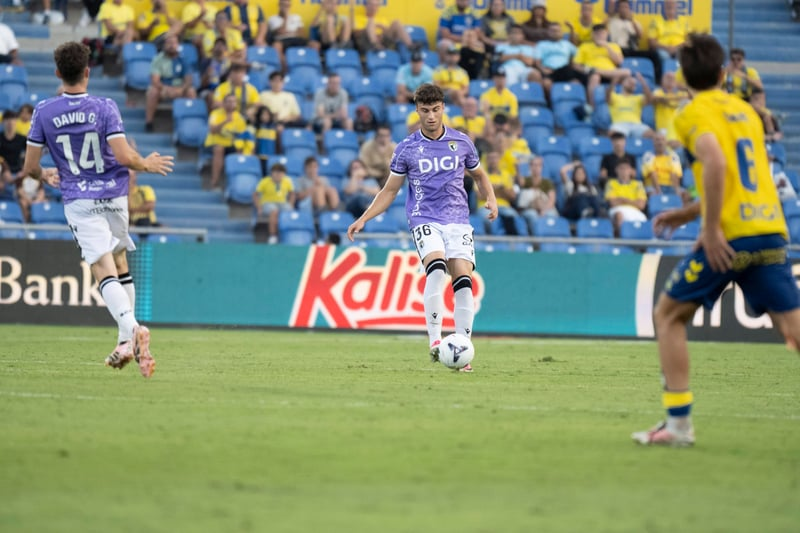

Miguel Pérez Cuesta, Michu, ha expresado esta mañana, en la presentación de Sergio Francisco como nuevo entrenador del Burgos CF, su deseo de que una de las mayores perlas de la cantera, como es Iván Martínez, se asiente en el primer equipo.
La gran actuación del central granadino en Copa, siendo esta un gran escaparate para el futbolista, unida a la gran progresión que ha tenido en el filial con un Albistegui que apostó fuerte por él, hacen que el central pueda cobrar peso en el proyecto del Burgos CF de cara a la próxima campaña 26-27.
Y es que la llegada de Sergio Francisco es otra de las claves de su posible irrupción en el primer equipo, ya que este se caracteriza por confiar en los jóvenes. Todo esto ha convencido a Michu, que tiene en sus planes otorgarle una mayor responsabilidad dentro del equipo.
Esta intención por parte del director deportivo sigue la línea en la lleva trabajando el club durante los últimos años de convertir a sus jóvenes en piezas importantes del proyecto, no solo de cara al presente, sino también al futuro, como así han comentado en numerosas ocasiones Alejandro Granidetti, Marcelo Figoli y el propio Michu.
Un ejemplo de ello es el de Saúl del Cerro, que tras subir al primer equipo en la temporada 24-25 se ha ido asentando poco a poco en el vestuario, convirtiéndose en un jugador a tener muy en cuenta como garantía de recambio, de momento.
Pero esta tendencia no solo se puede ver reflejada en el burgalés, sino también en jugadores como Fermín García o Marcelo Expósito, entre otros, los cuales en un principio iban a ser de la partida de Albistegui y no de Luis Miguel Ramis.
Para el que no lo conozca, Iván destaca por ser un central con muchísima personalidad, jerarquía y contundencia en los aspectos más defensivos. Además, una de sus características más reconocibles es la salida de balón, ya que siempre opta por sacar el esférico jugado, ya sea con pases interiores o con diagonales perfectas.
En cuanto a su trayectoria, recaló en las filas del conjunto blanquinegro en la temporada 24-25, procedente del equipo de su pueblo, el Maracena, en el que estuvo 4 años y llegó a jugar en 3.ª RFEF.
A lo que hay que añadir su paso por la cantera del Granada cuando era un niño.
En definitiva,la gran proyección del joven andaluz es más que evidente. Veremos lo que finalmente decide Michu respecto a Iván Martínez y si le incluye o no en la planificación de la próxima temporada, pero mi sensación es que le veremos como cuarto central en Segunda División.